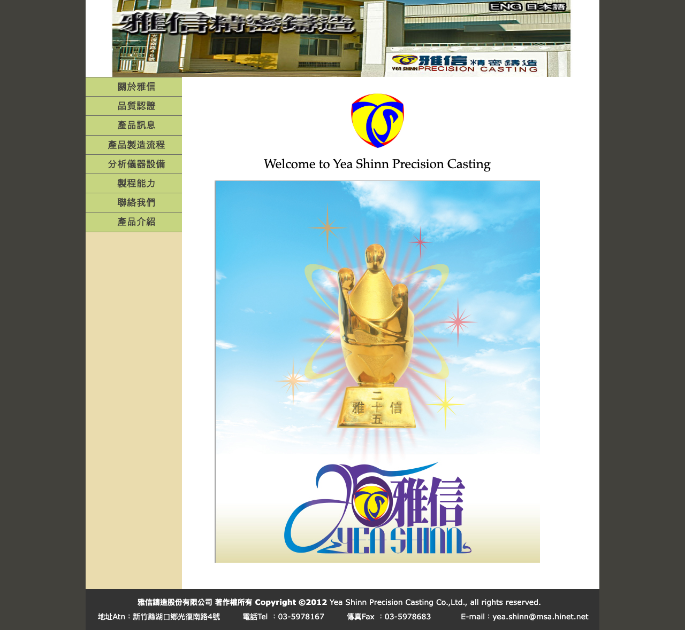
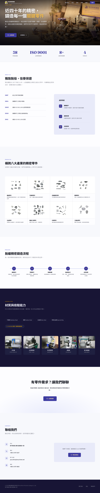
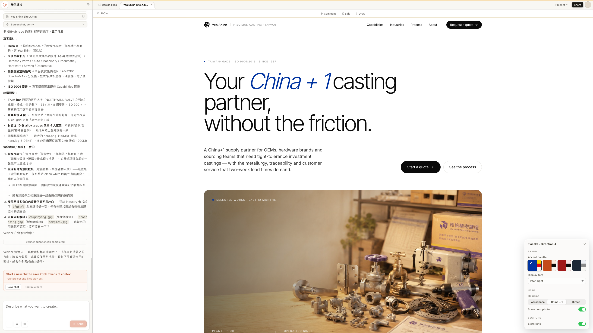
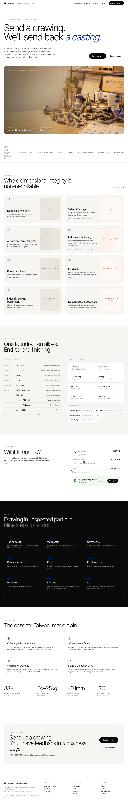

設計師不在的時候：用 Claude Design 一次對話拿到三個專業級網站方案
一家 38 年精密鑄造廠的官網翻新實錄——從研究同業、手刻第一版、到 AI 一次給出三個設計方向，中間只隔了一個晚上。
打開那個網站的時候，你會以為自己回到了 2012 年。
XHTML 寫的、iframe 切的、table 排的版面（現在還看得到）。首頁左邊是一個永遠展開的樹狀選單，右邊是一張被壓縮到模糊的工廠大門照片。SSL 憑證過期，瀏覽器會跳警告。點進英文版，寫著「Under Construction」——這行字已經在那裡十三年了。

這是一家 1987 年在新竹湖口創立的精密鑄造廠。做脫蠟鑄造，客戶遍及汽機車、氣動工具、閥門，也幫美軍生產過不少國防等級的精密零件——三十八年的實績，技術能力從來不是問題。但如果你是一個第一次造訪官網的採購工程師，你看到的第一印象是：這家公司可能已經不在了。
官網該改了。這件事所有人都知道。
但找外包做一個企業官網報價十幾萬起跳，改完之後每次要更新內容還得再找人——或者學一套 CMS，但公司裡沒有人會維護。對一家三十人的製造業中小企業來說，這不是優先級最高的事。於是網站就一直停在那裡，一停就是十三年。
這不是個案：台灣中小企業的官網困境
台灣有超過 160 萬家中小企業，佔全體企業的 98% 以上。這些公司裡有多少的官網還停留在十年前的技術？沒有人做過精確統計，但你隨便搜尋任何一個傳統產業的供應商名單，點進去看他們的網站，答案不言自明。
為什麼網站會凍結在 2012 年？
2012 年做一個企業官網，標準做法是 Dreamweaver 拉版面、table 排版、iframe 嵌套子頁面。那是一個合理的技術選擇——在那個年代。問題是，網頁技術在過去十年經歷了至少三次典範轉移，而這些網站一次都沒有跟上。
2012 年之後發生了什麼？Google 在 2015 年推出 Mobile-Friendly Update，手機不友善的網站搜尋排名直接被懲罰。2018 年 Google 全面切換到 Mobile-First Indexing——爬蟲優先看的是你的手機版，不是桌面版。2021 年 Core Web Vitals 變成排名訊號，載入速度、互動延遲、版面穩定度都會影響你在搜尋結果裡的位置。同一年，Chrome 開始對沒有 HTTPS 的網站標示「不安全」。
table 排版的網站沒有響應式設計，所以 Mobile-Friendly Update 打不到。iframe 架構讓每個子頁面是獨立的 HTML，SEO 權重被切碎。沒有 SSL 憑證，瀏覽器會跳警告。這些網站在 Google 的眼中，已經幾乎不存在了。
但對工廠老闆來說，網站「還能開」就等於「還能用」。客戶是靠展覽、靠介紹、靠業務拜訪來的，不是靠 Google 搜尋。所以沒有人覺得這是一個需要花十幾萬去解決的問題。網站就這樣凍在那裡，一凍就是十三年。
問題不只是技術老舊。問題是改的成本結構不對。一個外包專案的報價包含設計師出三版視覺、工程師切版、來回修改、上線部署——這些環節裡的每一個都需要專業人力，每一個都要錢。對年營收幾千萬的製造業來說，花十幾萬做一個「看起來比較新」的官網，投資報酬率算不過來。
2026 年，AI 工具讓「寫 code」這件事的門檻幾乎消失了。Claude Code、Cursor、GitHub Copilot——你用自然語言描述你想要的東西，AI 幫你寫出來。一個不會寫程式的人，一個晚上就能做出一個能動的網站。
但「能動」跟「好看」之間有一道鴻溝。
你可以讓 AI 幫你寫出一個結構正確、功能完整的網頁。但配色怎麼選？字型怎麼配？佈局的視覺重量怎麼分配？Hero 區塊要放什麼？這些設計決策，AI 不會主動幫你做——除非你告訴它方向，而你得先知道方向在哪。
寫得出來，不代表設計得好。
- 案例：一家 38 年精密鑄造廠的官網翻新，從手刻到 AI 設計提案。
- 發現：Claude Code 解決「寫」的問題，Claude Design 解決「設計方向」的問題——但最終的判斷還是人的。
- 給誰看：想用 AI 做網站但不確定設計方向怎麼定的一人團隊、非設計師背景的 builder。
先做功課：B2B 製造業網站有自己的設計語言
動手之前，先研究了十家國內外精密鑄造同業的網站。這個步驟不能跳過——B2B 製造業網站跟 SaaS landing page 是完全不同的邏輯。你的受眾不是消費者，是採購工程師；他們上你的網站只有一個目的：判斷你能不能做、品質可不可靠。
歸納出的共同模式很一致：
- 首頁結構照著客戶的決策路徑排——Hero 建立第一印象，接著是製造能力和認證資質，然後是服務的產業別，最後收在報價入口
- 深色沉穩配色——深藍或深灰搭白底，再加一個強調色。華麗不是重點，信任感才是
- 大量真實照片——工廠實拍、設備實拍、產品實拍。stock photo 在 B2B 製造業的語境裡反而會降低信任感
- 導覽不超過六項，CTA 統一是「Request a Quote」
台灣同業的共同問題則是技術債：table 排版、沒有響應式設計、沒有 SSL、SEO 幾乎為零。不是個案，是整個產業帶的現況。
研究階段最重要的一個發現：做得好的不是最華麗的，而是讓工程師和採購三秒內找到答案的。這個原則決定了後面所有的設計方向。
第一版：用 Claude Code 一個晚上手刻上線
把舊網站三十幾個 HTML 檔全部爬下來之後發現，實際有價值的內容很少。公司沿革五個年份、品質承諾三句話、八類產品各一張照片、五台檢驗設備各一張照片、一張製程流程圖、聯絡資訊。這些東西一頁式就能全部放完——舊網站拆成三十幾頁純粹是 iframe 時代的技術限制。
配色：從品牌已經在用的東西裡提煉
配色沒有從零發明。這家公司的 logo 是紅藍黃三原色，但二十五週年紀念視覺用的是紫藍色調——品牌其實一直偏好紫色，只是沒有人把它系統化過。
最後決定走紫加金黃。紫色在精密鑄造同業裡沒人用，辨識度天然就高。紫代表精緻和技術感，金代表金屬和品質感——語意上跟精密鑄造完全對得上。互補色，對比強但不吵。
技術：零依賴，一個檔案
用 Claude Code 直接寫純 HTML、CSS、vanilla JS。不用框架，不裝套件，整個網站就是一個 index.html。選擇零依賴不是技術偏好，是因為需求極簡——靜態內容、不需要後端、不需要狀態管理——加任何框架都是多餘的複雜度。
頁面結構跟研究階段歸納的 B2B 模式一致：
Hero → 數據條 → 關於（時間軸 + 品質承諾）→ 產品 → 製程 → 設備 → CTA → 聯絡 → FooterCSS 用 OKLCH 色彩空間定義整套色彩系統，搭配 clamp() 做流體排版。動畫用 Intersection Observer 做 scroll-reveal。部署在 GitHub Pages 上，當天就上線了。當然，如果你想要更完整的部署體驗——自訂域名、HTTPS、部署日誌——也可以直接用 Zeabur 的 GitHub 整合一鍵部署。
踩到的坑
GitHub Pages 的隱藏行為。GitHub Pages 預設跑 Jekyll 建置，Jekyll 會忽略底線開頭的檔案。從舊網站抓下來的照片有些是相機原始命名——_MG_0062.jpg 這種——部署後全部 404。解法很簡單：根目錄放一個 .nojekyll 空檔案。但你不知道這個機制的話，debug 會花不少時間。
素材品質的硬限制。舊網站的產品照是「一堆零件散落在白底上」的合照，放進現代的卡片式佈局裡格格不入。CSS 解決不了這個問題，最終還是需要重新拍攝。但先用現有素材上線再迭代，比等到完美素材到齊才動手實際得多。
表單不一定需要後端。精密鑄造的詢價不需要即時處理。一個 mailto: 連結預填好主旨和內容模板，客戶點了直接開 email app。比一個沒有後端支撐的假表單誠實。

mailto: 連結預填好主旨和內容模板，客戶點了直接開 email app——比一個沒有後端支撐的假表單誠實。轉折：用 Claude Design 重新來過
第一版解決了「有沒有」的問題。但做完之後一個念頭揮之不去：如果有一個設計師看過這個案例，他會怎麼做？他會不會選完全不同的方向？
Claude Design 是 Anthropic 推出的獨立設計工具——跟 Claude 聊天裡的 Artifacts 不同，它有持久的 canvas，可以反覆迭代累積設計資產，最後輸出一個完整的 handoff bundle 讓 coding agent 直接實作。
做法很直接：把舊網站的網址、現有的照片素材、和第一版的程式碼一起丟給 Claude Design。讓它重新設計。

它回來的東西超出預期。
三個設計方向，不是一個
Claude Design 沒有給一個固定的 mockup。它產出了三個完整的設計方向，每個方向都是可以在瀏覽器裡直接跑的 React prototype。
以 Direction A「Clean Industrial」為例——白底、大量留白、大字型，走 Apple 式的極簡工業感。它從 logo 的紅藍黃三原色衍生出四組配色方案：品牌藍、鍛橘、深紅、石墨灰。每一組都包含主色、輔助色、背景色和文字色的完整定義。字型準備了三種組合。Hero 區塊有三種文案變體，針對不同的市場切入角度。
每個方向都附帶一個 Tweaks Panel——點一下就能在配色之間切換，立刻看到整個頁面的視覺變化。換字型、換文案、開關模組，全部即時。

傳統流程裡，三個設計方向、每個方向四組配色、三種字型、三種文案變體——這是設計師幾週的工作量，加上幾輪 review 會議。
在 Claude Design 裡，這是一次對話。
它還多做了你沒想到的東西
更有意思的是 Claude Design 額外產出了第一版沒涵蓋的頁面：產品詳情頁和 RFQ 報價表單。這些在 B2B 網站裡其實是核心功能——第一版因為時間限制跳過了，Claude Design 自己判斷這些應該要有。
產出的 handoff bundle 結構是這樣的：
project/
├── Yea Shinn Site A.html ← 設計方向 A（進入點）
├── src/
│ ├── shared.jsx ← 共用元件
│ ├── direction-a.jsx ← 方向 A（27KB）
│ ├── direction-b.jsx ← 方向 B
│ ├── direction-c.jsx ← 方向 C
│ ├── product-page.jsx ← 產品詳情頁
│ ├── rfq-form.jsx ← 報價表單
│ └── logo-paths.js ← SVG logo 路徑
├── images/
└── README.md ← 給 coding agent 的指示README 裡明確告訴 Claude Code：讀主設計檔、順著 import 把所有元件讀一遍、理解整體結構後用適合的技術棧重新實作。Prototype 的 code 不是 production code——agent 的任務是匹配視覺產出，不是複製內部結構。
同一個案例，兩種工作模式
| V1：Claude Code 手刻 | V2：Claude Design | |
|---|---|---|
| 投入時間 | 一個晚上 | 一次對話 |
| 設計決策 | 自己研究同業後判斷 | AI 提供三個方向，人來挑 |
| 配色來源 | 從品牌資產手動提煉 | AI 從 logo 衍生四組方案 |
| 技術產出 | 純 HTML 單檔，可直接部署 | React prototype，需轉換 |
| 涵蓋範圍 | 單頁首頁 | 首頁 + 產品頁 + 報價表單 |
V1 是「我知道我要什麼，AI 幫我寫」。你做完了研究、定好了方向、選好了配色——Claude Code 是你的打字員，效率最高。
V2 是「我不確定最好的方向，AI 給我選項」。你還在探索階段，或者你想看看自己的判斷跟專業設計的提案差多少——Claude Design 一次給你三個方向和數十種排列組合，你的工作是挑。
兩者不是互斥的。它們是設計流程裡不同階段的最佳工具。
三秒內找到「你能不能做、品質可不可靠」的答案。
工具到位了，瓶頸在哪？
寫 code 的門檻消失了，做設計稿的門檻也在消失。一個人、一個晚上、零設計背景，可以做出兩個版本的企業官網——一版手刻上線、一版拿到三個專業級設計方向等著挑。
但整個過程裡真正花時間的不是寫 code，也不是等 AI 產出設計。是研究同業、是判斷配色、是決定「這張照片放 Hero 背景適不適合」、是在三個設計方向裡選出那一個。
這些決策沒有 AI 會幫你做。AI 可以一次給你十個方向，但挑出對的那一個是你的工作。
配色選紫加金黃，不是因為 AI 推薦，是因為看了品牌二十五年的視覺資產之後自己判斷的。頁面結構照 B2B 決策路徑排列，不是因為框架預設，是因為研究了十家同業之後歸納出來的。Claude Design 給的品牌藍方案其實也不錯——但要不要從紫色換成藍色，這個決定只有理解品牌脈絡的人能做。
工具讓執行成本趨近於零。但判斷的門檻沒有變。
如果你也想試
- 先做功課——研究你的產業裡做得好的網站長什麼樣。別跳過這步。AI 可以幫你寫 code、幫你做設計稿，但它不會幫你理解你的受眾想看到什麼。
- 先用 Claude Code 手刻一版——逼自己做配色、佈局、結構的設計決策。做的過程就是在建立判斷力。即使結果不完美，這些決策經驗是你之後評估 AI 提案時的基準。
- 再用 Claude Design 挑戰自己的判斷——把你做完的東西丟給它，看它會提出什麼不同的方向。也許你會發現自己的選擇是對的；也許你會發現一個你沒想到的可能性。
那個 2012 年的官網還在線上。但旁邊已經有一個新版本跑在 GitHub Pages 上了，還有三個設計方向等著被挑。
這件事還沒做完。但一個十三年沒動過的官網，不再需要等十幾萬的預算才能開始改。